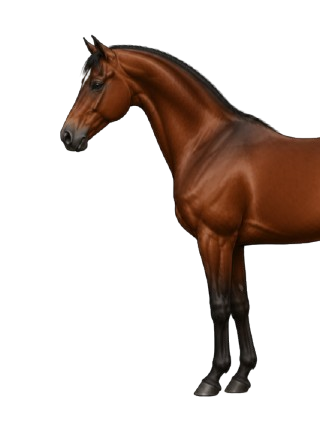
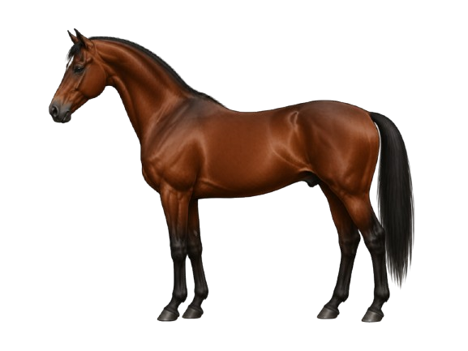

Three Views, One Horse
The horse is broken into three views to make the parts easier to learn in smaller groups. Start with the front, move to the back, then use the whole-horse view to see everything together.
Front of the Horse

Front of Horse — Parts
Poll
The very top of the head, between the ears. The highest point when the horse holds its head naturally.
Ears
Two large, mobile ears that rotate independently to pick up sounds. Ear position reflects how the horse is feeling.
Foretop
The tuft of mane hair that falls from the poll between the ears onto the forehead. Also called the forelock.
Face
The central area of the head between the forehead and the muzzle, along the nasal bone.
Nostril
The two openings on the muzzle through which the horse breathes. They flare wide during exercise or when the horse is alert.
Muzzle
The soft lower part of the face including the nostrils and lips. Horses use the muzzle to explore and handle food.
Throatlatch
Where the underside of the jaw meets the top of the neck. A bridle strap of the same name passes through this area.
Neck
Connects the head to the shoulder and body. Its length and angle affect how the horse balances and moves under saddle.
Mane
The long hair growing from the top ridge of the neck. It typically falls to one side and acts as a natural fly deterrent.
Withers
The highest point of the back, between the shoulder blades. Horse height is measured here in hands.
Shoulder
The large area of the upper foreleg and shoulder blade. Shoulder angle affects stride length and smoothness of movement.
Chest
The muscular front of the body between the front legs.
Knee
The middle joint of the front leg, equivalent to the human wrist. One of the most closely monitored joints for soundness.
Back of the Horse

Back of Horse — Parts
Withers
The highest point of the back. The front reference point for where the back begins and the standard measuring point for horse height.
Back
The area between the withers and the hindquarters where the saddle sits. A strong back supports the rider.
Croup
The top of the hindquarters, from the highest point of the pelvis toward the tail. Croup slope varies between breeds.
Dock
The bony upper root of the tail, containing vertebrae and muscle. Tail bandaging always starts here.
Tail
The long hair hanging from the dock. Used to swish flies and communicate mood.
Barrel
The rounded ribcage section between the forelegs and the flank. A rider's leg rests against the barrel when riding.
Flank
The soft area behind the barrel and in front of the hindquarters. A sensitive region.
Thigh
The muscular upper section of the hind leg. A well-developed thigh indicates good overall conditioning.
Buttock
The rounded, muscular area at the back of the hindquarters. The point of buttock is the most rearward bony prominence - easy to see when viewing a horse from the side.
Hock
The large angled joint in the middle of the hind leg, equivalent to the human ankle. Flexes with every stride.
Cannon
The large bone between the knee or hock and the fetlock. The most prominent bone of the lower leg.
Fetlock
The prominent joint between the cannon bone and the pastern, on all four legs.
Pastern
The sloping section between the fetlock and the hoof. Its angle affects how the horse absorbs concussion.
Hoof
The hard outer casing that protects the foot. Needs regular trimming and farrier care.
Whole Horse

💡 Quick Tip
Try to name each labeled part before reading the pill — then check the Front and Back tabs for any you missed.